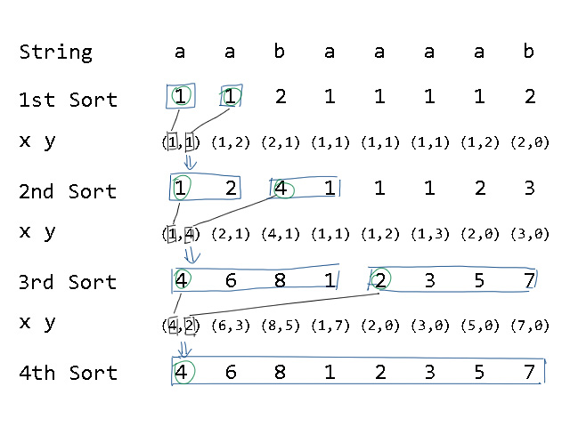

后缀数组
本文最后更新于 2024年6月27日 晚上
知识前置
字符串
你需要知道字符串是什么东西。
基数排序
将待排序元素拆分成$k$个关键字，对关键字排序后即可完成对元素的排序。
详见OI-Wiki
算法定义
后缀排序是指一个字符串的所有后缀按照字典序排序的结果。
这个过程涉及到两个数组，$sa$和$rk$，其中$sa[i]$表示字符串的所有后缀按照字典序升序排序后的编号，$rk[i]$表示第$i$个后缀的字典序排名。其中，$sa$称为后缀数组。
显然，$sa[rk[i]]=rk[sa[i]]=i$，因为第$i$个后缀的排名对应的后缀和第$i$个排名的后缀对应的排名一样，都等于原数组编号。
后缀数组有很多用处，可以解决查找形如$AA$的子串、最小化字典序等问题。
使用条件
倍增法时间复杂度$O(n\log n)$，空间复杂度$O(n)$。
算法原理
以串 aabaaaab为例：
| $i$ | 后缀 |
|---|---|
| $1$ | aabaaaab |
| $2$ | abaaaab |
| $3$ | baaaab |
| $4$ | aaaab |
| $5$ | aaab |
| $6$ | aab |
| $7$ | ab |
| $8$ | b |
后缀排序后：
| $i$ | 后缀 | $rk[i]$ |
|---|---|---|
| $4$ | aaaab |
$1$ |
| $5$ | aaab |
$2$ |
| $6$ | aab |
$3$ |
| $1$ | aabaaaab |
$4$ |
| $7$ | ab |
$5$ |
| $2$ | abaaab |
$6$ |
| $8$ | b |
$7$ |
| $3$ | baaaaab |
$8$ |
对后缀完成字典序排序，统计后缀的排名。
算法实现
$O(n^2\log n)$算法
很容易想到，对所有后缀进行 sort()排序。
但这样所需时空复杂度巨大，无法支持大数据量。
$O(n\log^2n)$算法
思路是对每个长度为$2^k$的子串排序，求出$rk$值，这样当$2^k>n$时，每个子串就相当于所有后缀。
每一次排序都利用上一次排序的$rk$值，那么长度为$2^k$的字符串就可以用两个长度为$e^{k-1}$的字符串的排名作为关键字表示，利用 sort()进行排序。
这个的正确性容易证明，因为在将两个长度为$2^{k-1}$的字符串拼接时，比较字典序会先看前面的串，后看后面的串。按第一、第二关键字排序恰好符合。
以 aabaaaab为例，倍增过程如下：

这样需要倍增$\log n$次，加上排序$O(n\log n)$。
$O(n\log n)$算法
还是倍增的思路，注意到排序有两个关键字，均为排名，值域$1\sim n$，可以使用基数排序。
倍增$O(\log n)$，排序$O(n)$，总时间复杂度$O(n\log n)$。
基于$O(n\log n)$算法的常数优化
把$rk[id[i]]$存下来，并尝试减少不连续的内存访问，减少内存调度时间。
代码实现
例题 洛谷P3809 后缀排序模板
1 | |
最长公共前缀
定义$height[i]$为相邻两排名后缀的最长公共前缀，即$height[i]=LCP(suffix(sa[i]),\ suffix)$。则对于任意满足$rk[j]<rk[k]$的两后缀$j,\ k$，均有
$$LCP(suffix(j),\ suffix(k))=\min^{rk[k]}_{i=rk[j]}{height[i]}$$
这个很好证，因为后缀排序是按照字典序的，所以前缀具有传递性。两后缀的最长公共前缀就是中间相邻的最长公共前缀的最小值。
由此，只要求出$height$数组就能求任意前缀的$LCP$。
$O(n^2)$算法
求$height$数组可以从$1$到$n$比较相邻排名的后缀，单次比较$O(n)$，总时间复杂度$O(n^2)$。
$O(n)$算法
$height$数组满足性质$height[rk[i]]\ge height[rk[i-1]]-1$，具体证明过程我也没理解。
借助这个性质，匹配相邻排名$LCP$时就可以直接借助上一个的$height$从中间开始，不需要从头比较。比较次数常数级别，会快很多，时间复杂度近似$O(n)$。
代码实现
1 | |
写在最后
建议你看一下这篇论文，讲得比较详细，也有很标准的代码。